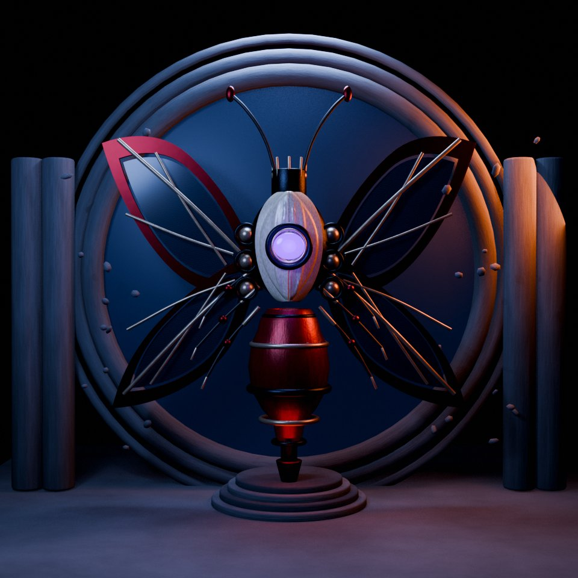
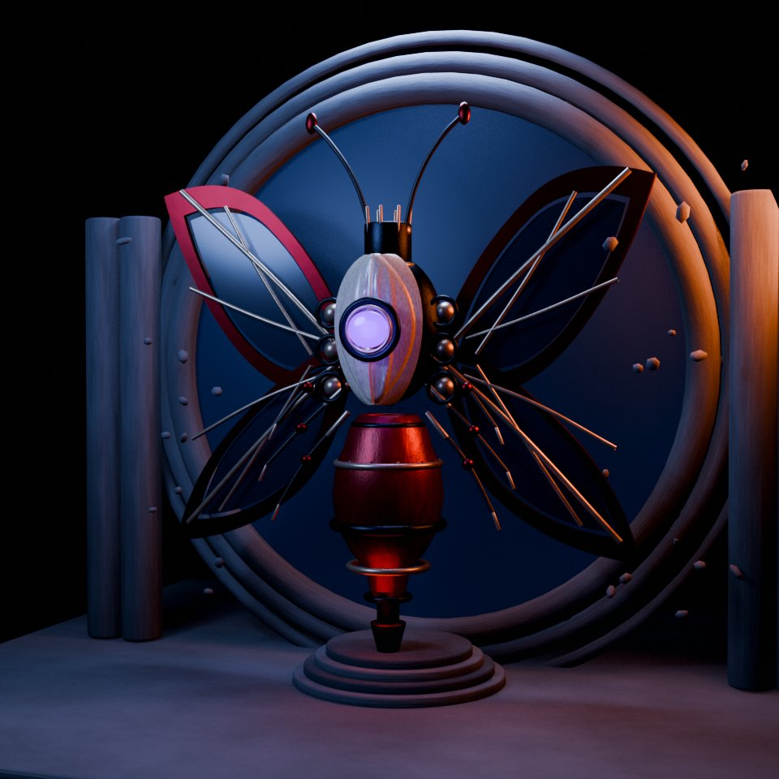
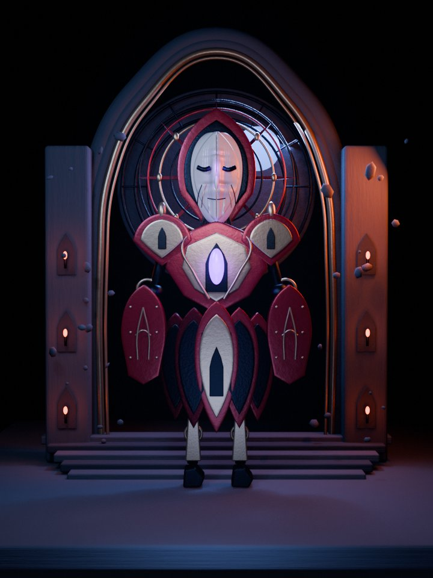
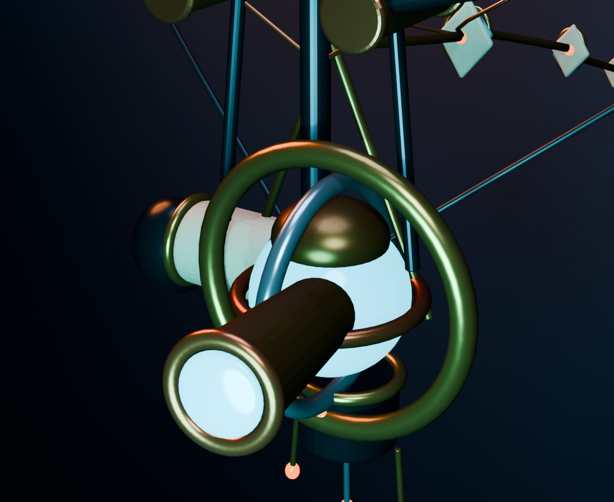
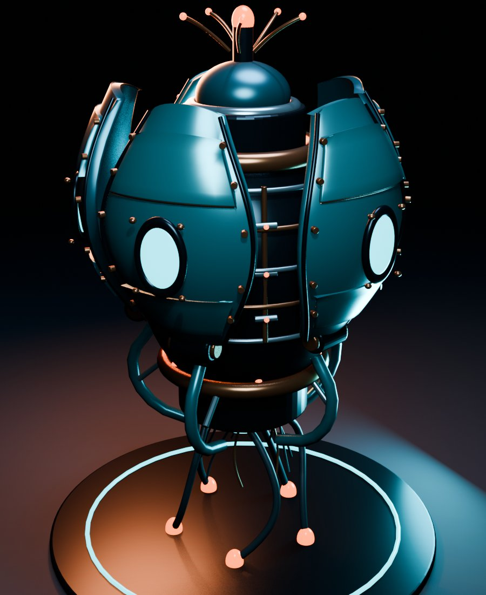

reliquaries 2026 the last litany, closeup the last litany v2 vesper reliquary vesper reliquary, three-quarter reliquary guardian v2 reliquary guardian v2, closeup aeolian surveyor aeolian surveyor, detail pelagic reliquary pelagic reliquary, detail made with blendergpt